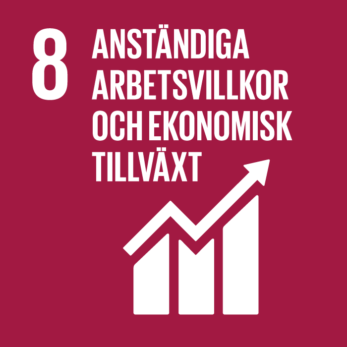
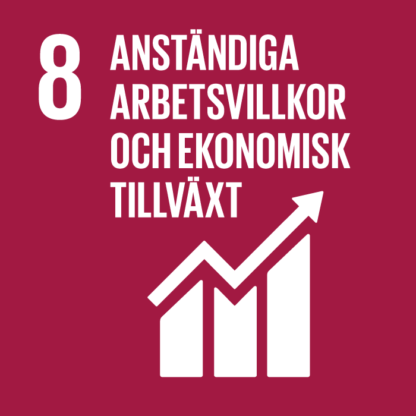
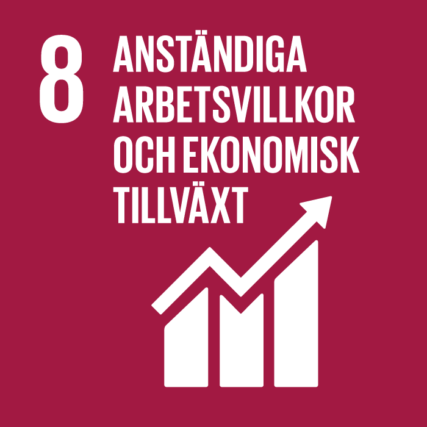
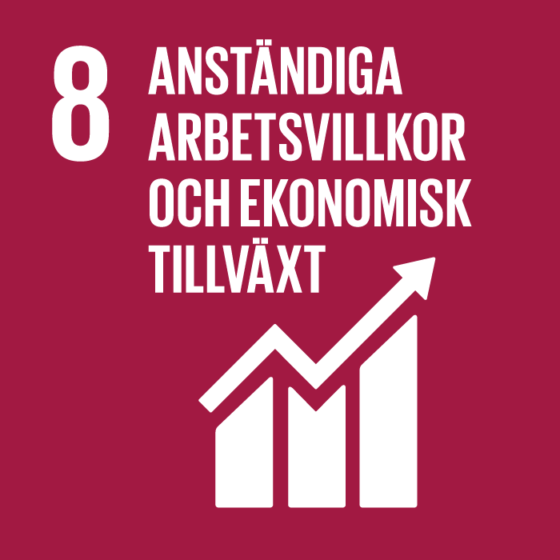

Hållbarhet ur ett miljöperspektiv
 


 

Med det extremt ökande användning av internet och olika typer av streamingtjänster krävs det enorma datacenter som kan hantera efterfrågan. Dessa stora datacenter som finns utöver världen kräver en enorm energianvändning vilket i sin tur bidrar till stora mängder koldioxidutsläpp och på så sätt även den globala uppvärmningen. Detta leder till problem både globalt och lokalt. Oftast väljs en avlägsen plats när ett nytt datacenter byggs. Oförmågan att faktiskt ta vara på den värme och som dessa produceras. Som utvecklare i företag bör man ha i åtanke är följande:
Digitaliseringen ökar och internet samt digitala tjänster är och kommer fortsätta vara en stor del av varje individs liv, i vissa fall omöjligt att leva utan. Ur en hållbarhetssynpunkt ska en digitalisering av samhället hjälpa till att minska vår klimatpåverkan genom i både automatisering och effektivisering.
Energikrävande processer i våra datacenter startar varje gång någon gör en Google sökning, strömmar musik eller film. 2017 beräknades nedladdningen av enbart låten ”Despacito” förbruka lika mycket elektricitet som 4 mindre länder i Afrika under ett helt år.
Fortsätter IT utvecklingen som den gör idag utan några hållbarhetsåtgärder beräknas datacenterindustrin stå för 20% av elförbrukning och uppemot 5,5% av koldioxidutsläpp mellan 5–10 år.
Större tryck på leverantörer av IT-tjänster och hur dem hanterar sina datacenter och potentiellt driva dem med förnybar energi, eller energisnålare mjukvara skulle göra bidra till klimatsmarta lösningar.
Grön IT är en viktig aspekt i IT-samhällets arbete mot en bättre hållbarhet. Det finns otroligt mycket viktigt en utvecklare ska tänka på vid utveckling av system för att bidra till mer ekologiska hållbara system. Vid webbutveckling finns det många olika aspekter att ta hänsyn till för att skapa en miljövänligare webbplats.
IT-branschens smutsiga baksida med de viktiga mineralerna som krävs för att utveckla dagensystem bidrar till inhumana förhållanden som strider mot FN:s globala mål. Det är upp till företagen att se till att hela leverantörskedjan förhåller sig till dessa mål. Det kan vara svårt att härleda till vart mineralerna som används i just ett specifikt företag har drivits ut. Att driva en fullt ut spår-bar leverantörskedja kan företagen försäkra sig om att just dem mineralerna som används i deras produkter inte kommer från någon leverantör som inte uppehåller det målen som satts av FN. Vissa företag använder sig av en så-kallad block-kedja för att kunna spåra mineralerna ursprung, storlek.